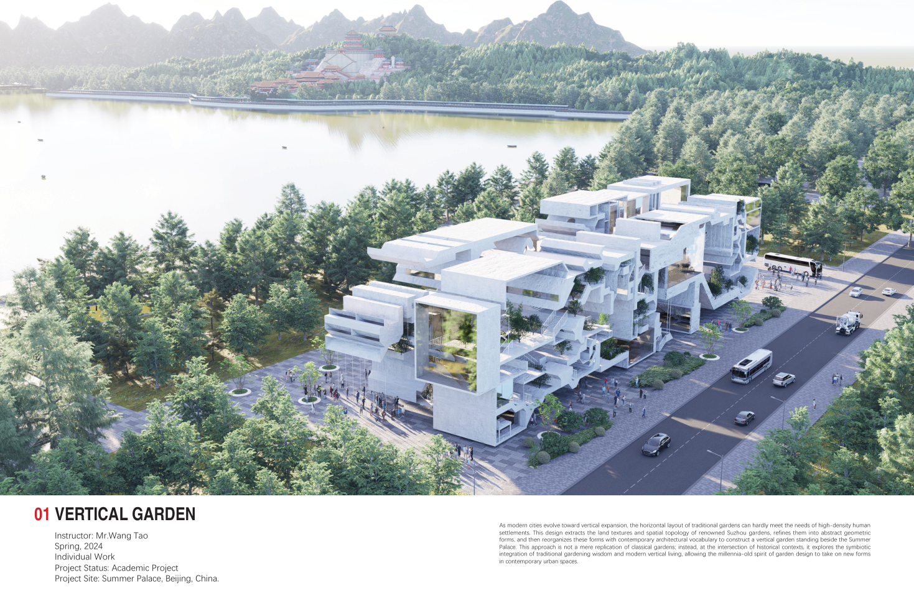
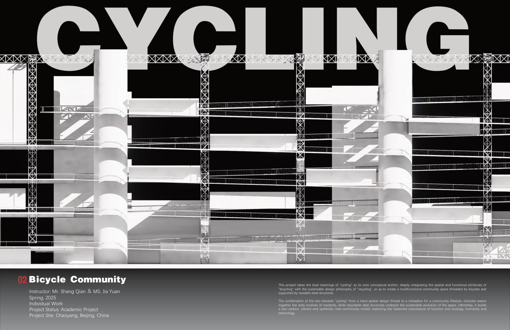
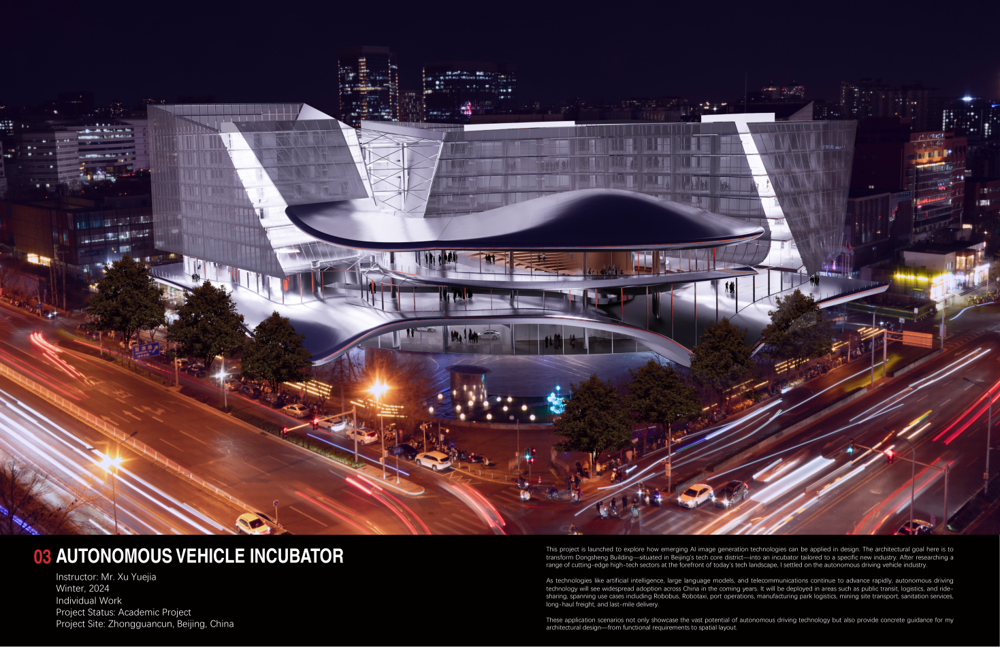
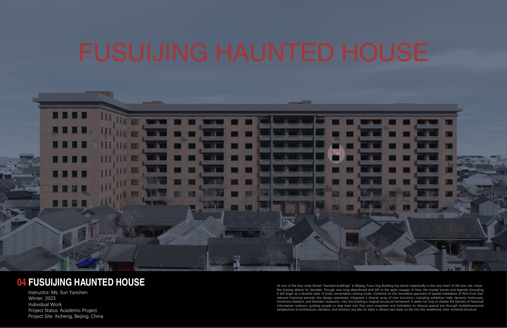
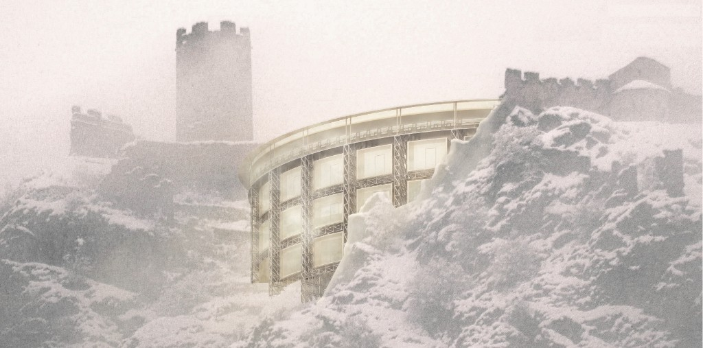

作品集
Works
Vertical Garden
As modern cities evolve toward vertical expansion, the horizontal layout of traditional gardens can hardly meet the needs of high-density human settlements. This design extracts the land textures and spatial topology of renowned Suzhou gardens, refines them into abstract geometric forms, and then reorganizes these forms with contemporary architectural vocabulary to construct a vertical garden standing beside the Summer Palace.

Bicycle Community
This project takes the dual meanings of "cycling" as its core conceptual anchor, deeply integrating the spatial and functional attributes of "bicycling" with the sustainable design philosophy of "recycling", so as to create a multifunctional community space threaded by bicycles and supported by reusable steel structures.

Autonomous Vehicle Incubator
Launched to explore how emerging AI image generation technologies can be applied in design, this project transforms Dongsheng Building in Beijing's tech core district into an incubator tailored to the autonomous driving vehicle industry — spanning Robobus, Robotaxi, port operations, logistics, and last-mile delivery.

Fusuijing Haunted House
Centered on the innovative approach of spatial translation of films from four relevant historical periods, this design seamlessly integrates exhibition halls, dynamic livehouses, immersive theaters, and thematic museums into the building's original structural framework — injecting a vibrant new lease on life into this weathered, time-honored structure.

Theatre of History
The Chatel-Argent Castle in Villeneuve has stood for countless ages, trans-forming from its original defensive purpose into ruins. Behind its broken facade lies a deep sense of history and the passage of time, as well as a silent witness to the village's development over the years. Today, the stones from which the castle takes its name still glisten in the sunlight, as if narrating that long history to every visitor.

The Redemption of Light
Grotto art is a treasure that combines Buddhist culture with local culture after it was introduced to China. It combines the traditional techniques of Chinese painting and sculpture and is uniquely Chinese. In order to bring daylight into the dark caves for carving, ancient craftsmen cut many windows into the rock walls. But while the light brings illumination, it also makes the colors on the Buddha slowly fade over time. Nowadays the bigger problem is the disfiguring repair of. Restoration using simple and crude methods erases many traces of the history that already existed. The Buddha statues are covered with cheap paint and the original patterned edges, folds of clothes and other subtle traces will no longer exist. The disfigurement of Buddha statues is a frequent occurrence, and when the statues are repaired with colourful and glittering gold, our question arises: how can we make a better restoration?